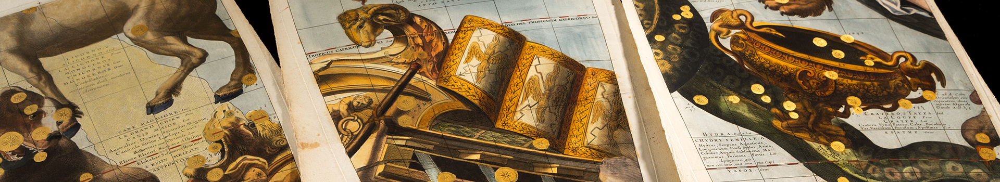

What is the artistic and scientific heritage of the sky at night?
What is the artistic and scientific heritage of the sky at night?
The "Sky at Night Reprise" is an exhibit of items originally displayed at the Fred Jones Jr. Museum of Art, the National Weather Center, and the Schusterman Library during the Galileo's World Exhibition (2015 -16).
Galileo's Starry Messenger contains the first published observations of the heavens made with the telescope. When Galileo pointed the telescope to the stars and constellations, the background of night gave way before his eyes. Galileo’s telescope resolved an astonishing number of unexpected stars never seen before, as revealed in illustrations of the belt and sword of Orion the Hunter, and the Pleiades star cluster on the back of Taurus the Bull.
Feature cases - Hexagonal
Feature cases - Hexagonal

- Galileo, Sidereus nuncius (Venice, 1610). "Starry Messenger". Originally displayed in "An Artful Observation of the Cosmos" exhibit.
- Giorgio Vasari, Lives of Seventy Eminent Painters, Sculptors and Architects; in Le opera (Florence, 1878-85), 9 vols. Originally displayed in "An Artful Observation of the Cosmos" exhibit.
- Lorenzo Sirigatti, La Pratica di Prospettiva (Venice, 1596). "The Practice of Perspective". Originally displayed in "An Artful Observation of the Cosmos" exhibit.
Feature cases - T-configuration
Feature cases - T-configuration

- Johann Bayer, Uranometria (Ulm, 1661), bound with Johann Bayer. "Measuring the Heavens". Originally displayed in "An Artful Observation of the Cosmos" exhibit.
- Johann and Elisabeth Hevelius, Firmamentum Sobiescianum sive Uranographia (Gdansk, 1690). "The Firmament of King Sobiesci, or Map of the Heavens". Originally displayed in "An Artful Observation of the Cosmos" exhibit.
- Johann and Elisabeth Hevelius, Prodromus Astronomiae (Gdansk, 1690), bound with the Uranographia. "Preliminary Discourse for Astronomy". Originally displayed in "An Artful Observation of the Cosmos" exhibit.
- Johann and Elisabeth Hevelius, Catalogus stellarum fixarum (Gdansk, 1687), bound with the Uranographia. "Catalog of Fixed Stars". Originally displayed in "An Artful Observation of the Cosmos" exhibit.
- John Flamsteed, Atlas coelestis (London, 1729). "Celestial Atlas". Originally displayed in "An Artful Observation of the Cosmos" exhibit.
- Johann Bayer, Uranometria (Ulm, 1661), bound with Johann Bayer, Explicatio characterum (Ulm, 1697). "Map of the Heavens". Originally displayed in "An Artful Observation of the Cosmos" exhibit.
Periphery
Periphery

Case 1: Early Star Atlases
Case 1: Early Star Atlases
- Hyginus, Poeticon astronomicon (Venice, 1485), "Astronomical Poem". Originally displayed in "An Artful Observation of the Cosmos" exhibit.
- Ptolemy, Opera (Basel, 1541), "Works". Originally displayed in "An Artful Observation of the Cosmos" exhibit.
- Giovanni Paolo Gallucci, Theater of the World; Theatrum mundi (Venice, 1588). Originally displayed in "The Scientific Revolution" exhibit.
- Johann Kepler, De stella nova in pede serpentarii (Prague, 1606), "On the New Star in the Foot of the Serpent Handler"; Originally displayed in "An Artful Observation of the Cosmos" exhibit.

Wall: Celestial Globes
Wall: Celestial Globes
- Vincenzo Coronelli, Celestial Globe Gores (Paris, 1693; reprint ca. 1800 using original plates). "Celestial Globe Gores". Originally displayed in "An Artful Observation of the Cosmos" exhibit.

Case 2: The Moon and the Telescope
Case 2: The Moon and the Telescope
- Johann Hevelius, Map of the Moon; Selenographia (Gdansk, 1647). Originally displayed in "An Artful Observation of the Cosmos" exhibit.
- James Nasmyth and James Carpenter, Der Mond (Leipzig, 1876). "The World of the Moon," Originally displayed in "An Artful Observation of the Cosmos" exhibit.

Case 3: Literature and the Night Sky
Case 3: Literature and the Night Sky
- Alfred Lord Tennyson, Poems (London, 1843), 2 vols. Originally displayed in "Galileo and Space Science" exhibit.
- Questar 3.5 inch Maksutov-Cassegrain telescope. Originally displayed in "An Artful Observation of the Cosmos" exhibit.
- Robert Frost, “The Star-Splitter,” New Hampshire (New York, 1923). Originally displayed in "Galileo and Space Science" exhibit.
Case 4: Phases of the Moon and Venus
Case 4: Phases of the Moon and Venus
- Tellurian, Trippensee Planetarium Company (Detroit, c. 1908-1920). Originally displayed in "Music of the Spheres" exhibit.

Case 5: Astronomy and Education
Case 5: Astronomy and Education
- Catherine Whitwell, An Astronomical Catechism (London, 1818); Originally displayed in "An Artful Observation of the Cosmos" exhibit.
- Nicolas Lane, Pocket globe (London, 1809). Originally displayed in "Galileo and Space Science" exhibit.

Case 6: Astronomy and Education
Case 6: Astronomy and Education
- Urania’s Mirror (London 1825), a boxed set of 32 cards; with Jehoshaphat Aspin, A Familiar Treatise on Astronomy (London 1825), 2d ed. Originally displayed in "Galileo and Space Science" exhibit.

Instrument tables
Instrument tables
- Sundials: Pocket sundial, by David Beringer (Nuremberg, c. 1760); Polyhedral sundial, by David Beringer (Nuremberg, c. 1790). Originally displayed in "Music of the Spheres" exhibit.
- Complex Armillary Sphere replica (Brian Grieg). Originally displayed in "Music of the Spheres" exhibit.
- Astrolabe replica (Brian Grieg). Originally displayed in "Music of the Spheres" exhibit.
- Delamarche Orrery (Paris, 1847). Originally displayed in "Music of the Spheres" exhibit.
Further Reading
Further Reading
- William B. Ashworth, Jr., Out of This World: The Golden Age of the Celestial Atlas, An Exhibition of Rare Books from the Collection of the Linda Hall Library, with supplement Further Out (printed catalogs; online exhibit)
- Nick Kanas, Star Maps: History, Artistry and Cartography, 2d ed (Springer, 2012)
- Chet Raymo, 365 Starry Nights (Simon & Schuster, 1990)